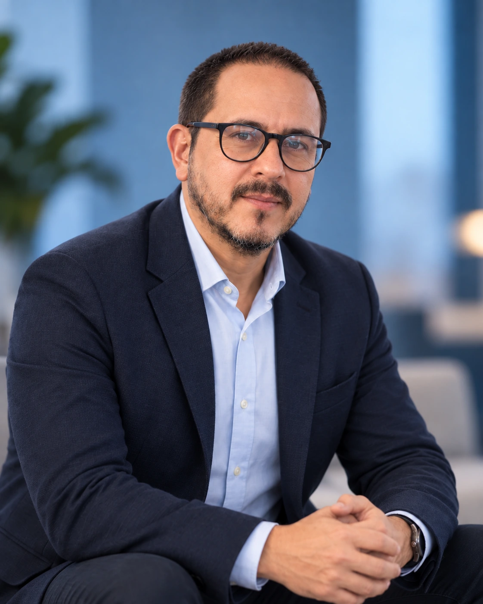

Comunicador social y periodista con más de 15 años de experiencia. Combino criterio editorial, comunicación institucional, producción de contenidos y herramientas de IA para ordenar ideas, simplificar procesos y convertir experiencia en resultados concretos.

Experiencia en redacción, edición, comunicación institucional, reportería gráfica, producción audiovisual, locución y transcreación de inglés a español. Hoy también aplico IA y automatización a tareas que consumen tiempo sin sacrificar revisión humana.
Ordeno información compleja, encuentro el mensaje central y la convierto en piezas claras, útiles y publicables.
Comunicación, contenido, conferencias y mejora de procesos con IA cuando realmente aporta.
Edición y corrección institucional, actas, monitoreo de medios, seguimiento de agenda y apoyo a SENA Radio.
Gestión social con personas con discapacidad motora, levantamiento de información y mejora de prototipos.
Copy interno, cubrimiento fotográfico y video, edición audiovisual y gestión de contenidos.
Reportería gráfica, cubrimientos, copy, locución y apoyo audiovisual para canales institucionales.
Cubrimiento fotográfico y videográfico de proyectos sociales y eventos comunitarios.
Copy creativo, traducción y transcreación EN–ES, fotografía asistente y locución comercial.
Periodismo y reportería gráfica para la comunidad latina en Filadelfia y zonas cercanas.
Universidad Externado de Colombia · 2005
Universidad Externado de Colombia · 2018
Redacción publicitaria, diseño web, locución, guion y producción audiovisual.
Formación en Buenos Aires, modalidad virtual · 2015 y 2020.
En 2008 sobreviví a un ACV hemorrágico. Esa experiencia dio origen a Mente Resiliente y a mi trabajo como conferencista sobre reconstrucción, cambio y manejo de la adversidad desde una perspectiva humana y comunicativa.